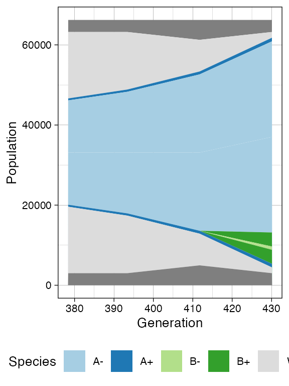

Disclaimer: RACES/rRACES internally implements the probability distributions using the C++11 random number distribution classes whose algorithms are not defined by the standard. Thus, the simulation depends on the compiler used to compile rRACES, and because of that, the results reported in this article may differ from those obtained by the reader.
Once one has familiarised on how a tumour evolution simulation can be
programmed using rRACES (see
vignette("tissue_simulation")), the next step is to augment
the simulation with sampling of tumour cells. This mimics a realistic
experimental design where we gather tumour sequencing data.
This vignette introduces sampling using different type of models; starting from simpler up to more complex simulation scenarios we consider:
multi-region sampling: where at every time point multiple spatially-separated samples are collected;
longitudinal sampling: where the sampling is repeated at multiple time-points.
Custom multi-region sampling
We consider a simple monoclonal model, without epimutants.
library(rRACES)
# set the seed of the random number generator
set.seed(0)
# Monoclonal model, no epimutants
sim <- SpatialSimulation("Monoclonal")
sim$add_mutant(name = "A", growth_rates = 0.1, death_rates = 0.01)
sim$place_cell("A", 500, 500)
sim$run_up_to_size("A", 60000)
#> [███████████████████████████████████-----] 85% [00m:00s] Cells: 51160 [████████████████████████████████████████] 100% [00m:00s] Saving snapshot
current <- plot_tissue(sim)
current
A sample is defined by a name and a bounding box, which has a coordinate for the bottom left point, and for the top right point.
For this simulation, we define two samples with names
"S_1_2" and "S_1_2".
# We collect a squared box of (bbox_width x bbox_width) cells
bbox_width <- 50
# Box A1
bbox1_p <- c(400, 400)
bbox1_q <- bbox1_p + bbox_width
# Box B1
bbox2_p <- c(500, 500)
bbox2_q <- bbox2_p + bbox_width
library(ggplot2)
# View the boxes
current +
geom_rect(xmin = bbox1_p[1], xmax = bbox1_q[2],
ymin = bbox1_p[1], ymax = bbox1_q[2],
fill = NA, color = "black") +
geom_rect(xmin = bbox2_p[1], xmax = bbox2_q[2],
ymin = bbox2_p[1], ymax = bbox2_q[2],
fill = NA, color = "black")
# Sampling
sim$sample_cells("S_1_1", bottom_left = bbox1_p, top_right = bbox1_q)
sim$sample_cells("S_1_2", bottom_left = bbox2_p, top_right = bbox2_q)Note: Sampling removes cells from the tissue, as if the tissue was surgically resected. Therefore, cells that are mapped to the bounding box after application of
SpatialSimulation$sample_cells()are no longer part of the simulation.
A new call to plot_tissue() will show the box where the
cells have been removed to be white.
plot_tissue(sim)
This is also reflected by SpatialSimulation$get_cells(),
which now will not find any tumour cell in the sampled region.
library(dplyr)
#>
#> Attaching package: 'dplyr'
#> The following objects are masked from 'package:stats':
#>
#> filter, lag
#> The following objects are masked from 'package:base':
#>
#> intersect, setdiff, setequal, union
# This should be empty
sim$get_cells(c(400, 400), c(400 + bbox_width, 400 + bbox_width)) %>% head
#> [1] cell_id mutant epistate position_x position_y
#> <0 rows> (or 0-length row.names)It should also be remarked that the sampling process exclusively collects tumour cells, while it excludes wild-type cells.
Cell division tree for sampled cells
Every sampled cell is linked, at the evolutionary level, to the other
cells that originate from the same initial cell. It helps to visualise
the evolutionary information on the cells that we have sampled as a
forest of trees (if one seeded multiple initial cells). The forest is an
object of the S4 class SamplesForest.
forest <- sim$get_samples_forest()
forest
#> SamplesForest
#> # of trees: 1
#> # of nodes: 18255
#> # of leaves: 5181
#> samples: {"S_1_1", "S_1_2"}The forest has methods to obtain the nodes of the sampled cells.
forest$get_nodes() %>% head
#> cell_id ancestor mutant epistate sample birth_time
#> 1 0 NA A <NA> 0.000000
#> 2 1 0 A <NA> 5.741436
#> 3 2 0 A <NA> 5.741436
#> 4 3 2 A <NA> 8.545185
#> 5 4 2 A <NA> 8.545185
#> 6 5 1 A <NA> 11.583620The leaves of the forest are sampled cells, while the internal nodes
are their ancestors. The field sample is not available for
internal nodes, and reports the sample name otherwise.
# The leaves in the forest represent sampled cells
forest$get_nodes() %>%
filter(!is.na(.data$sample)) %>%
head
#> cell_id ancestor mutant epistate sample birth_time
#> 1 14350 3768 A S_1_2 181.9186
#> 2 18621 14799 A S_1_2 197.6872
#> 3 21101 3988 A S_1_2 205.8270
#> 4 26307 18963 A S_1_2 220.3426
#> 5 27246 22386 A S_1_2 222.8447
#> 6 27814 17642 A S_1_1 224.2599The roots of the forest having no ancestors.
# If it is one cell, than the forest is a tree
forest$get_nodes() %>%
filter(is.na(.data$ancestor))
#> cell_id ancestor mutant epistate sample birth_time
#> 1 0 NA A <NA> 0We can also query the forest about the samples used to build it.
forest$get_samples_info()
#> name id xmin ymin xmax ymax tumour_cells tumour_cells_in_bbox time
#> 1 S_1_1 0 400 400 450 450 2588 2588 397.0568
#> 2 S_1_2 1 500 500 550 550 2593 2593 397.0568We can visualise the forest. This plot reports the cells and, on the y-axis, their time of birth.
plot_forest(forest)
The plot shows also samples annotations and species but, for a large number of cells, it might be complicated to view the full tree, unless a very large canvas is used. For this reaason, it is possible to subset the tree.
# Extract the subforest linked to sample
S_1_1_forest <- forest$get_subforest_for("S_1_1")
plot_forest(S_1_1_forest)
In general, these plots can be annotated with extra information, such as the sampling times, and the MRCAs of each sample in the tree.
# Full plot
plot_forest(forest) %>%
annotate_forest(forest)
# S_1_1 plot
plot_forest(S_1_1_forest) %>%
annotate_forest(S_1_1_forest)
Randomised multi-region samples
# set the seed of the random number generator
set.seed(0)
sim <- SpatialSimulation("Randomised")
sim$add_mutant(name = "A", growth_rates = 0.1, death_rates = 0.01)
sim$place_cell("A", 500, 500)
sim$run_up_to_size("A", 60000)
#> [█████████████████████████████████-------] 81% [00m:00s] Cells: 48656 [████████████████████████████████████████] 100% [00m:00s] Saving snapshotWe include a new mutant and let it grow. This new mutant has much higher growth rates than its ancestor.
# Add a new mutant
sim$add_mutant(name = "B", growth_rates = 1, death_rates = 0.01)
sim$mutate_progeny(sim$choose_cell_in("A"), "B")
sim$run_up_to_size("B", 10000)
#> [█████████████████████████████-----------] 71% [00m:00s] Cells: 99536 [████████████████████████████████████████] 100% [00m:00s] Saving snapshot
current <- plot_tissue(sim)
current
Since mutant start has been randomised by
SpatialSimulation$choose_cell_in(), we have no exact idea
of where to sample to obtain for example,
of its cells. We can look visually at the simulation, but this is
slow.
rRACES provides a SpatialSimulation$search_sample()
function to sample bounding boxes that contain a desired number of
cells. The function takes in input:
- a bounding box size;
- the number of cells to sample for a species of interest.
SpatialSimulation$search_sample() will attempt a fixed
number of times to sample the box, starting from positions occupied by
the species of interest. If a box that contains at least
cells is not found within a number of attempts, then the one with the
largest number of samples is returned.
This allows to program sampling without having a clear idea of the tissue conformation.
# A bounding box 50x50 with at least 100 cells of species B
n_w <- n_h <- 50
ncells <- 0.8 * n_w * n_h
# Sampling ncells with random box sampling of boxes of size n_w x n_h
bbox <- sim$search_sample(c("B" = ncells), n_w, n_h)
# plot the bounding box
current +
geom_rect(xmin = bbox$lower_corner[1], xmax = bbox$upper_corner[1],
ymin = bbox$lower_corner[2], ymax = bbox$upper_corner[2],
fill = NA, color = "black")
# sample the tissue
sim$sample_cells("S_2_1", bbox$lower_corner, bbox$upper_corner)Something similar with species A.
bbox <- sim$search_sample(c("A" = ncells), n_w, n_h)
# plot the bounding box
current +
geom_rect(xmin = bbox$lower_corner[1], xmax = bbox$upper_corner[1],
ymin = bbox$lower_corner[2], ymax = bbox$upper_corner[2],
fill = NA, color = "black")
# sample the tissue
sim$sample_cells("S_2_2", bbox$lower_corner, bbox$upper_corner)The two samples have been extracted.
plot_tissue(sim)
Cell division tree.
forest <- sim$get_samples_forest()
plot_forest(forest) %>%
annotate_forest(forest)
Randomised cell sampling (Liquid biopsy)
rRACES supports randomized cell sampling over the full tissue or a rectangle thereof.
# collect up to 2500 tumour cells randomly selected over the whole tissue
sim$sample_cells("S_2_3", num_of_cells = 2500)
bbox <- sim$search_sample(c("A" = ncells), n_w, n_h)
# collect up to 200 tumour cells randomly selected in the provided
# bounding box
sim$sample_cells("S_2_4", bbox$lower_corner, bbox$upper_corner, 200)
forest <- sim$get_samples_forest()
plot_forest(forest) %>%
annotate_forest(forest)
Two populations with epigenetic state
We are now ready to simulate a model with epigenetic switches and subclonal expansions.
# set the seed of the random number generator
set.seed(0)
sim <- SpatialSimulation("Two Populations")
sim$death_activation_level <- 20
# First mutant
sim$add_mutant(name = "A",
epigenetic_rates = c("+-" = 0.01, "-+" = 0.01),
growth_rates = c("+" = 0.1, "-" = 0.08),
death_rates = c("+" = 0.1, "-" = 0.01))
sim$place_cell("A+", 500, 500)
sim$run_up_to_size("A+", 1000)
#> [████████████████████████████████████████] 100% [00m:00s] Saving snapshot
plot_tissue(sim, num_of_bins = 500)
We sample before introducing a new mutant.
bbox_width <- 10
sim$sample_cells("S_1_1",
bottom_left = c(480, 480),
top_right = c(480 + bbox_width, 480 + bbox_width))
sim$sample_cells("S_1_2",
bottom_left = c(500, 500),
top_right = c(500 + bbox_width, 500 + bbox_width))
plot_tissue(sim, num_of_bins = 500)
# Let it grow a bit more
sim$run_up_to_time(sim$get_clock() + 15)
#> [████████████████████████████████████████] 100% [00m:00s] Saving snapshot
plot_tissue(sim, num_of_bins = 500)
Add a new submutant.
cell <- sim$choose_cell_in("A")
sim$add_mutant(name = "B",
epigenetic_rates = c("+-" = 0.05, "-+" = 0.1),
growth_rates = c("+" = 0.8, "-" = 0.3),
death_rates = c("+" = 0.05, "-" = 0.05))
sim$mutate_progeny(cell, "B")
# let it grow more time units
sim$run_up_to_size("B+", 7000)
#> [████████████████████████████████████████] 100% [00m:00s] Saving snapshot
plot_tissue(sim, num_of_bins = 500)
Sample again and plot the tissue
n_w <- n_h <- 25
ncells <- 0.9 * n_w * n_h
bbox <- sim$search_sample(c("A" = ncells), n_w, n_h)
sim$sample_cells("S_2_1", bbox$lower_corner, bbox$upper_corner)
bbox <- sim$search_sample(c("B" = ncells), n_w, n_h)
sim$sample_cells("S_2_2", bbox$lower_corner, bbox$upper_corner)
plot_tissue(sim, num_of_bins = 500)
plot_muller(sim)
Now we show the cell division tree, which starts being rather complicated
forest <- sim$get_samples_forest()
plot_forest(forest) %>%
annotate_forest(forest)
Storing Samples Forests
A samples forest can be saved in a file by using the method
SamplesForest$save().
# check the file existence. It should not exists.
file.exists("samples_forest.sff")
#> [1] FALSE
# save the samples forest in the file "samples_forest.sff"
forest$save("samples_forest.sff")
# check the file existence. It now exists.
file.exists("samples_forest.sff")
#> [1] TRUEThe saved samples forest can successively be load by using the
function load_samples_forest().
# load the samples forest from "samples_forest.sff" and store it in `forest2`
forest2 <- load_samples_forest("samples_forest.sff")
# let us now compare the samples forests stored in `forest` and `forest2`;
# they should be the same.
forest
#> SamplesForest
#> # of trees: 1
#> # of nodes: 5494
#> # of leaves: 1390
#> samples: {"S_1_1", "S_1_2", "S_2_1", "S_2_2"}
forest2
#> SamplesForest
#> # of trees: 1
#> # of nodes: 5494
#> # of leaves: 1390
#> samples: {"S_1_1", "S_1_2", "S_2_1", "S_2_2"}